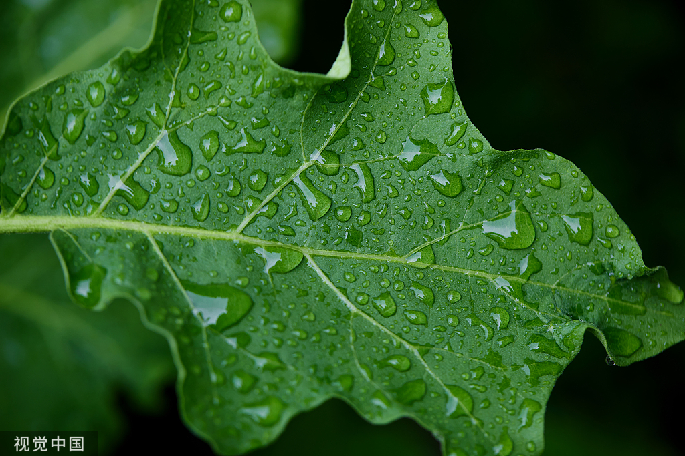
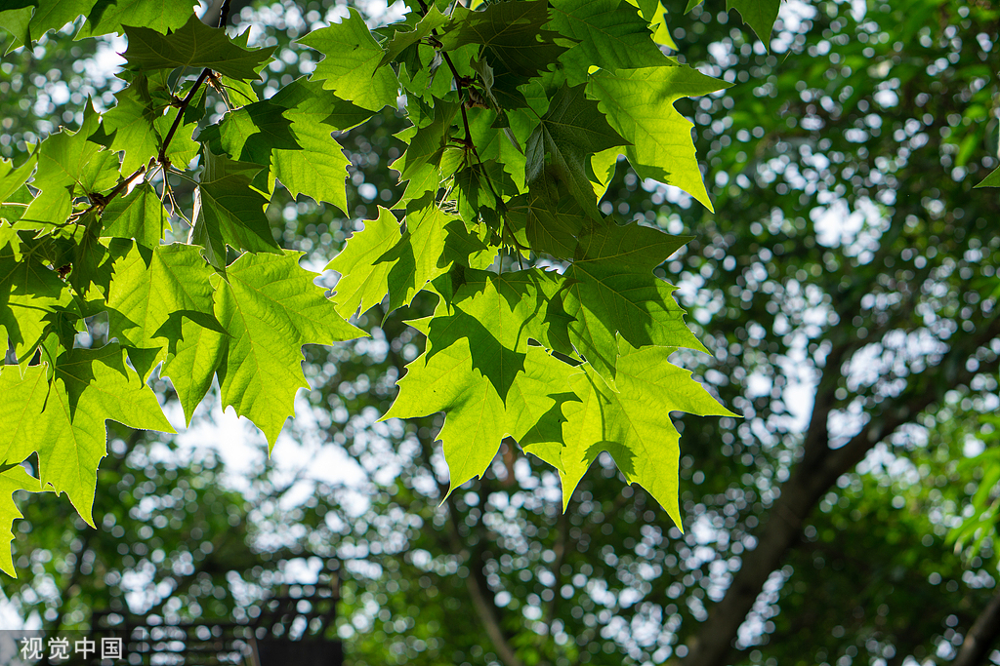
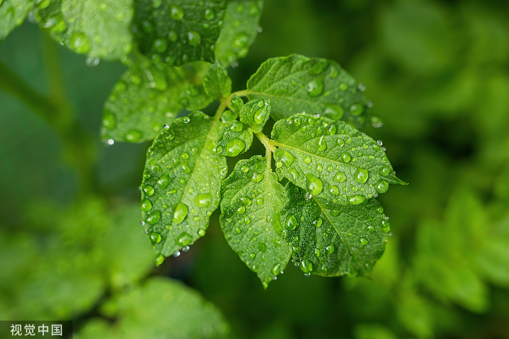

欢迎来到树叶的世界！
树叶不仅是植物的重要器官，也是自然界的重要元素。每一种叶子都有其独特的分类方式。
今天是：
树叶分类可以帮助我们理解植物的适应性和生态功能，对于植物学的研究至关重要。 通过观察树叶的形态、颜色、排列等特征，可以判定不同植物种类。



树叶分类技术背景
树叶分类技术是基于图像处理与机器学习的研究领域，利用计算机视觉算法分析树叶的形态、颜色、纹理等特征， 为植物学研究提供了一种高效、快速的工具。
"大自然不是一个地方，而是一种感觉。" - 瑞秋·卡森
"当你凝视大自然时，你也在凝视自己。" - 卡尔·古斯塔夫·荣格
"地球是我们的家，保护自然就是保护我们自己。" - 地球人
"自然从不急于完成，但它总是实现目标。" - 拉尔夫·瓦尔多·爱默生
"自然界的每一个角落都充满了生命与美丽。" - 约翰·缪尔
"人与自然和谐共生，才能确保人类的可持续发展。" - 王德峰
"人类从自然中获得了生命，而自然又从人类中获得了保护。" - 达尔文
"我们借用大自然的资源，但不能摧毁它。" - 奥斯卡·王尔德
"没有大自然，艺术就失去了根基。" - 皮卡索
"大自然是最伟大的艺术家。" - 莱昂纳多·达·芬奇